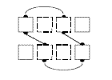
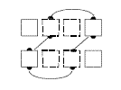
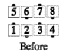
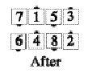
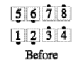
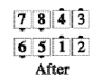
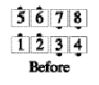
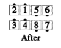

From general lines only: Each dancer moves forward one spot along the circulate path shown below: A lead end Circulates to the far center spot in the same line; a lead center Circulates to the far end spot in the same line; a trailing end Circulates to the near center spot in the other line, and a trailing center Circulates to the near end spot in the other line. If two dancers are about to collide and they are facing the same direction, the belle goes in front of the beau; if they are facing each other, they pass right shoulders.

Examples:



For Teaching: You can describe this as: Leads Cross Run as trailers (do their part of) Couples Circulate and Half Sashay as they go. However, it is far more effective to re-introduce the idea of circulate paths (already used at Basic), and use it to describe the call.
Timing: 6
© Copyright 1982, 1986-1988, 1995, 2001-2015. Bill Davis, John Sybalsky, and CALLERLAB Inc., The International Association of Square Dance Callers. Permission to reprint, republish, and create derivative works without royalty is hereby granted, provided this notice appears. Publication on the Internet of derivative works without royalty is hereby granted provided this notice appears. Permission to quote parts or all of this document without royalty is hereby granted, provided this notice is included. Information contained herein shall not be changed nor revised in any derivation or publication.